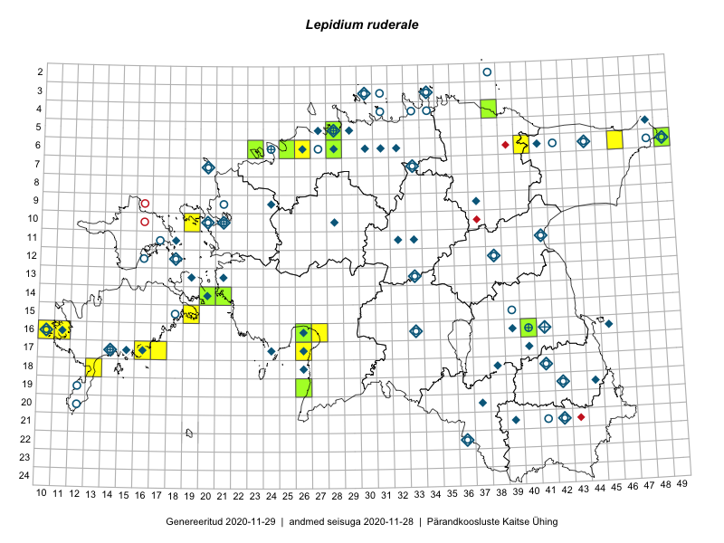

Lepidium ruderale
Uuendatud: 2016-12-01
Kaardile koondatud taksonid: Lepidium ruderale L.

Kaart põhineb 14 kirjel.
Viited andmebaasikirjetele
- Ott Luuk, Hannes Pehlak: 2015-07-21: 06-49: ala
- Sirje Azarov, Mari Reitalu: 2015-08-22: 16-11: ala
- Mari Metsoja, Jaak-Albert Metsoja: 2015-07-29: 06-26: ala
- Mari Metsoja, Jaak-Albert Metsoja: 2015-07-25: 06-25: ala
- Peedu Saar: 2016-05-24: 05-28: ala
- Peedu Saar, Thea Kull: 2016-06-07: 19-26: ala
- Ott Luuk, Toomas Kukk, Peedu Saar, Sander Laherand: 2016-06-30: 14-21: ala
- Mari Reitalu, Triin Reitalu: 2016-06-30: 15-19: ala
- Sander Laherand, Peedu Saar: 2016-07-28: 06-40: ala
- Toomas Kukk, Meeli Mesipuu: 2016-08-12: 17-17: ala
- Mari Reitalu, Triin Reitalu: 2016-08-14: 15-19: ala
- Mari Reitalu: 2016-09-27: 16-11: ala
- Ott Luuk, Peedu Saar: 2016-08-30: 17-16: ala
- Kadi-Liis Kesler, Tiina Elvisto: 2015-07-30: 06-46: ala